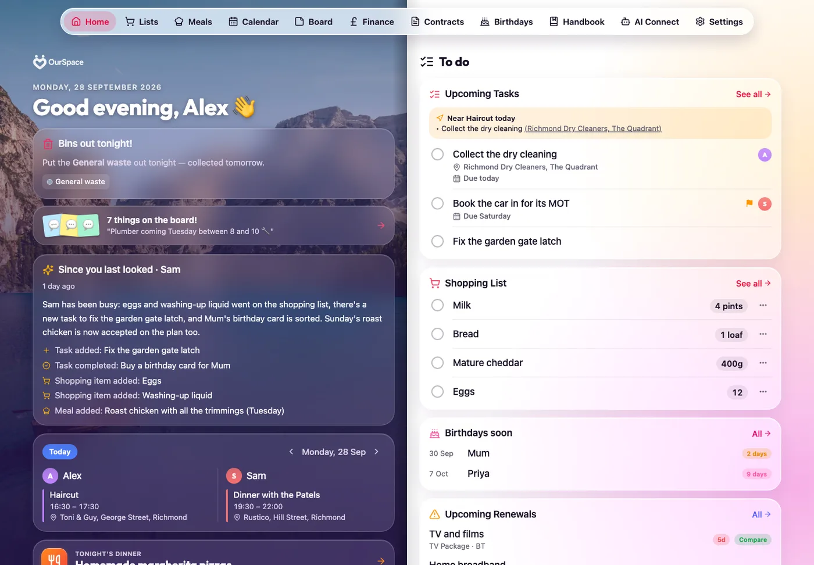
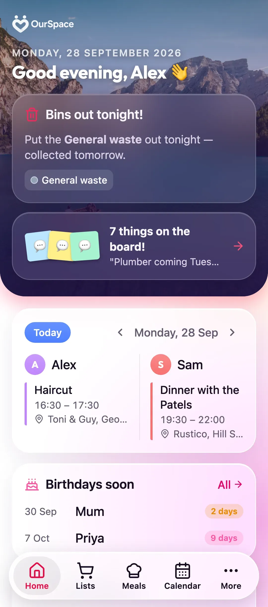
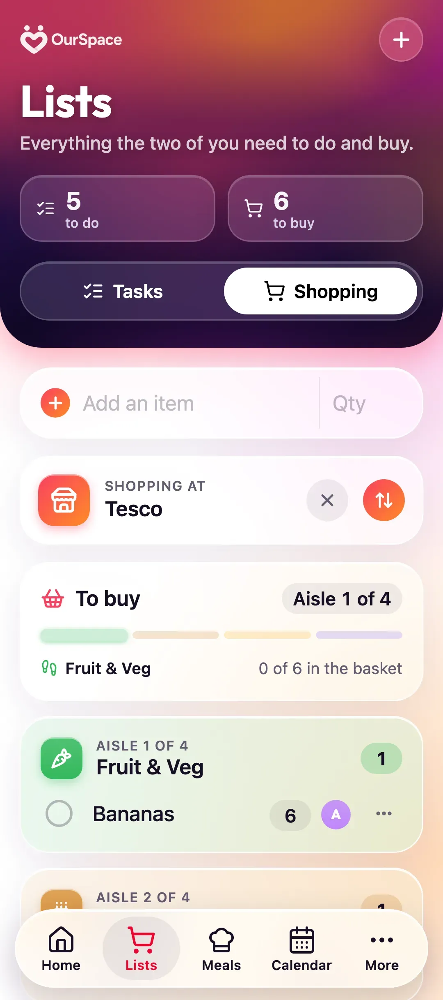
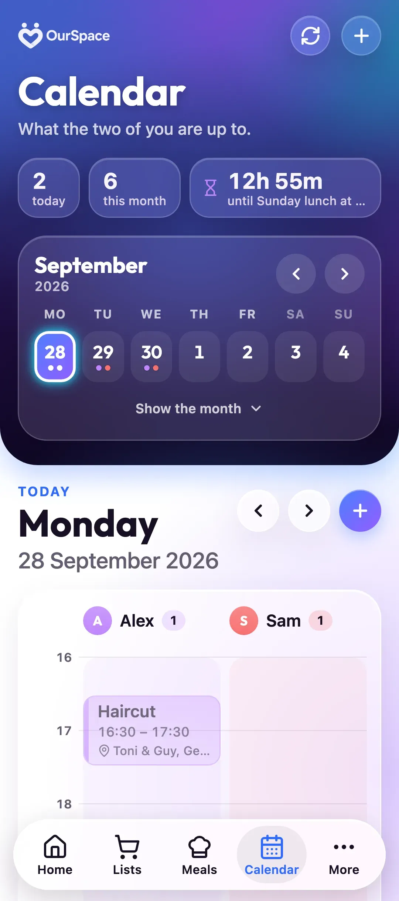
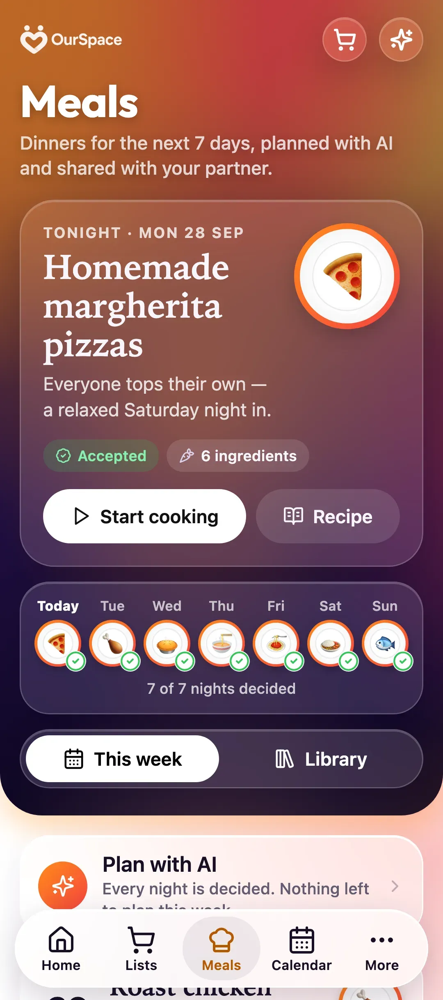
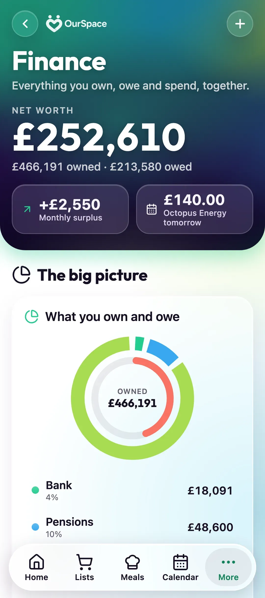
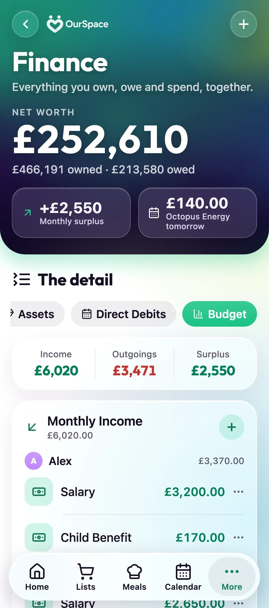
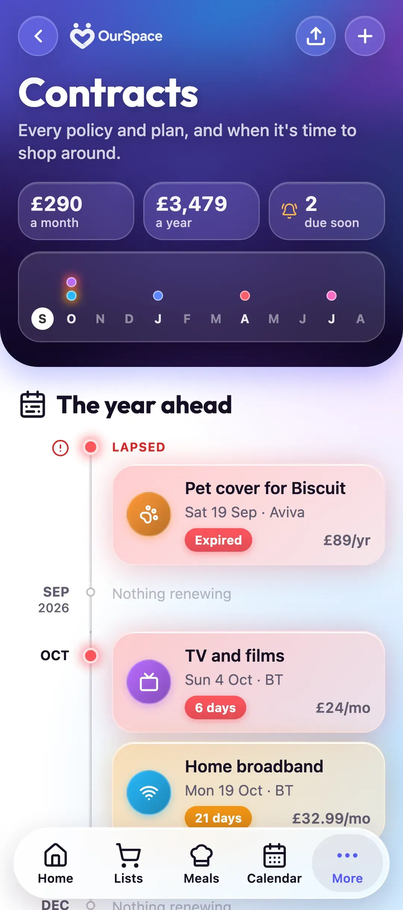
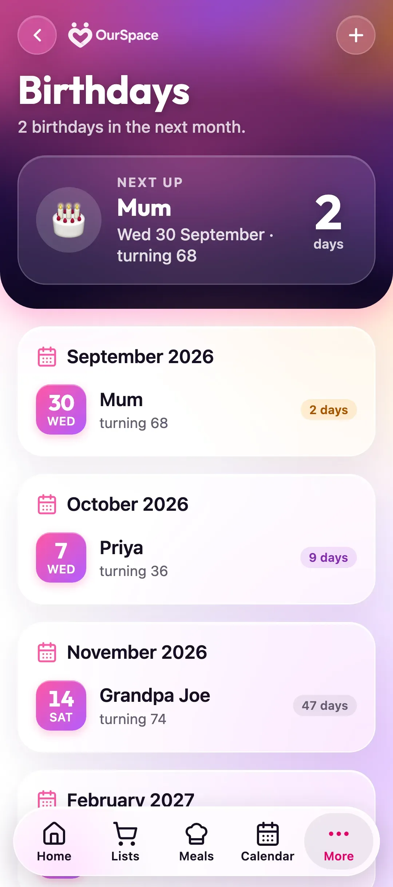

What OurSpace is#
OurSpace is one shared place for the things that keep a household running: the to-do list, the shopping, both your calendars, the week's dinners, the money, the contracts that renew, bin days, birthdays and the facts a house-sitter always asks for. You and your partner each have your own account. Once the two accounts are linked, you both see the same household, and anything either of you adds appears for the other.
It's built for a home rather than an office: there's no admin, no team and no permissions to manage. Almost everything is visible to both of you — the one exception among the everyday sections is a birthday you mark as a surprise. If you have children, the optional Kids, Family and Christmas sections add their week, a family map with check-ins, wish lists and Secret Santa.


Getting OurSpace and paying once#
It's the same household wherever you open it, so pick whatever suits each of you. One of you can be on an iPhone and the other on Android or a laptop.
| Where | How to get it | How you pay |
|---|---|---|
| iPhone | Download OurSpace from the App Store. | £2.99 inc VAT once, as a paid download handled by the App Store. There is no free trial on iPhone. |
| Android | Download OurSpace from Google Play. | Free for your first 7 days, with no card needed. Then £2.99 inc VAT once, through the Stripe checkout. |
| Any web browser | Go to our-space.me and tap Sign in. | The same as Android: free for your first 7 days, then £2.99 inc VAT once, through Stripe. |
That one payment is Lifetime Premium. There is no subscription, no adverts and no dearer tier with the good parts held back.
The 7-day trial on Android and the web#
Your trial starts the first time you sign in, and everything works while it runs. When it ends, the main sections are replaced by a page headed Your free trial has ended until you've paid. Settings and the in-app Guide stay open throughout, so you can always reach your account. Nothing you've added is deleted.
Paying on Android or the web#
- On the Your free trial has ended page, tap Go Premium.
- The button shows "Opening checkout…" and you're taken to the secure Stripe checkout. Pay there. On Android the checkout opens in your browser.
- Come back to OurSpace. Once the payment has gone through, your sections open again.
Putting the web app on your home screen#
If you use OurSpace in a browser, you can add it to your home screen so it opens full-screen, like an app.
- Chrome or Edge, on Android or a computer: when the browser offers it, an Install OurSpace card appears on Home and at the top of Settings. Tap Install.
- Safari on an iPhone or iPad: tap Share, then Add to Home Screen.
If something's not right#
The sections have gone and the page says "Your free trial has ended"
The 7-day trial on Android and the web has finished and OurSpace hasn't been paid for yet. Nothing has been deleted.
Tap Go Premium and pay once through the checkout. If you need your account first, tap Manage account to open Settings.
"Couldn’t start checkout. Please try again."
The checkout page couldn't be opened — usually a dropped connection.
Check you're online and tap Go Premium again. If it keeps happening, email Peter.
You've paid, but your partner still sees "Your free trial has ended"
The payment covers the account that paid and the account linked to it. If your two accounts aren't linked yet, OurSpace can't tell you're one household.
Link your accounts in Settings → Your partner (see Linking with your partner), then ask your partner to close OurSpace and open it again.
There's no "Install OurSpace" card
The card only appears in browsers that offer to install web apps, such as Chrome and Edge. It never appears on an iPhone, or inside the App Store or Google Play app, which is already installed.
On an iPhone, open our-space.me in Safari, tap Share, then Add to Home Screen.
Creating your account and signing in#
Each of you has your own account, under your own email address. You don't share a login: you link your two accounts together afterwards.
On iPhone#
Open the app and choose Continue with Apple, Continue with Google or Continue with email. If you're new, signing in creates your account. If you already use OurSpace on the website or on Android, sign in with that same account and everything is already there.
On Android and the web#
- Open the app, or go to our-space.me and tap Sign in.
- On the sign-in page that opens, sign in — or create your account there if you're new.
- The first time you arrive, the Setup Wizard opens to get you started.
Logging out#
Open Settings, go to the bottom and tap Log Out, then confirm with Log out. Everything stays as it is, ready for when you sign in again.
If something's not right#
You've signed in on another device and OurSpace is empty
You've signed in with a different email address, or a different sign-in method, from the one you used before — so you've been given a new, empty account.
Log out (Settings → Log Out) and sign in the same way you did the first time. Your household is attached to that account.
"Access Restricted — You are not registered to use this application"
The account you signed in with isn't recognised.
Check you're signed in with the right account, then log out and sign in again. If it carries on, email Peter and say which email address you're using.
The Setup Wizard didn't appear, or you skipped it
Nothing is lost. Open Settings → Help and about → Setup Wizard to run it whenever you like — every step in it is also in Settings.
Setting up: the Setup Wizard and your profile#
The first time you sign in, the Setup Wizard takes you through the basics in about two minutes. Tap Get started, then move through with Skip / Next. Every step is optional except your name, everything can be changed later in Settings, and Skip setup for now leaves the wizard altogether.
| Step | What it's for |
|---|---|
| Welcome to OurSpace, Quick Tour | A look at where the main parts live. |
| Your Profile | Your first name or nickname, and your colour — how your partner picks you out on events and tasks. |
| Your sections | Switch on what you'll use, and pick up to three sections for the bar along the bottom of your phone. |
| Stay in Sync | Notifications: choose what you're told about. |
| Google Calendar | Connect your own Google account so your events appear. |
| Birthday Reminders | Pull birthdays in from your Google Calendar. |
| Your country | Sets your currency, your local shops and which Amazon store links open. |
| Shopping Preference | Your usual supermarket, for quick search links on shopping items. |
| Meal Planning | Your usual likes and dislikes, and how many people are eating. |
| Bin Days | Each bin your council collects, and when. |
| Link with your Partner | Share your couple code, or enter theirs. |
When you reach You're all set!, OurSpace is ready. To go through it again at any time, open Settings → Help and about → Setup Wizard.
Your profile#
- Open Settings and tap Your profile.
- Fill in Your first name / nickname and choose Your colour in the app — Lavender, Coral, Sky, Mint, Amber or Rose.
- Tap Save. You'll see "Profile saved!".
If something's not right#
"Please enter your name" in the Setup Wizard
The profile step needs a name before the wizard will move on — it's how your partner sees you in the app.
Type your first name or a nickname, then carry on. You can change it later in Settings → Your profile.
The wizard says "Google Calendar isn't connected yet" on the birthday step
Birthdays are imported from your Google Calendar, so that step needs the calendar step before it.
Go back one step and connect Google Calendar, or skip — you can import birthdays later from the Birthdays page.
Linking with your partner#
Linking is what turns two accounts into one household. Each of you has a six-character couple code. One of you gives theirs to the other, who types it in. You only do it once.
- Both of you: sign in and save your profile.
- If your partner hasn't got OurSpace yet, open Settings → Your partner and, under Invite your partner, tap Copy app link or Share App to send them the link.
- One of you: open Settings → Your partner and copy or read out Your couple code.
- The other: open Settings → Your partner, type the code under Enter partner's code and tap Link.
- You'll see "Linked with …! 🎉". From now on you both see the same household.
Until you're linked, Home shows a Link with your partner card as a reminder. You can use OurSpace by yourself in the meantime — what you add is waiting for your partner when you link.
Unlinking#
Open Settings → Your partner and tap Unlink partner. Each of you keeps your own account and the things you added yourself, but stops seeing the other's. You can link again later.
If something's not right#
Your couple code shows "Not ready yet", or linking says "Please save your profile first."
A couple code only exists once your profile has been saved.
Open Settings → Your profile, enter your name, tap Save, then go back to Your partner.
"Code not found. Ask your partner to save their profile first."
The code was mistyped, or your partner hasn't saved their profile yet, so their code isn't live.
Check the six characters with your partner. If they're right, ask your partner to save their profile and try again.
"That's your own code!"
You've typed your own couple code into your own app.
Type your partner's code — or give yours to your partner for them to type in. Only one of you needs to do it.
"That account is already linked with someone else" or "You are already linked with someone else"
An account can be linked to one partner at a time.
Whoever is already linked opens Settings → Your partner, taps Unlink partner, and then you link again.
"Link failed: …" or "Could not reach the server."
The request didn't get through, usually because the connection dropped.
Check you're online and tap Link again. If the message includes some other wording, send it to Peter.
Finding your way around#
On a phone, a floating bar along the bottom starts with Home, ends with More, and has up to three sections of your choosing in between. Tap More for every other section you've switched on, plus AI Connect, the Guide and Settings. On a page you opened from More, the arrow at the top left takes you back.
On a tablet or computer, a bar along the top has every section you've switched on, with AI Connect and Settings at the end. Most pages open as two pages side by side.
| Section | What it holds |
|---|---|
| Home | Today at a glance: bins, the notice board, both your days, and what needs doing. |
| Lists | The shopping list and your tasks. |
| Meals | The week's dinners, and your recipe library. |
| Calendar | Both your diaries together. |
| Board | Notes, doodles, links and voice notes that last a day. |
| Finance | Accounts, debts, pensions, assets, direct debits, the budget and your net worth. |
| Contracts | Insurance, utilities, broadband and the rest, with their renewal dates. |
| Birthdays | Dates and gift ideas. |
| Handbook | The facts about the house, and read-only links for guests. |
| Kids | Each child's activities, drop-offs and pickups. Off until you switch it on. |
| Family | A family map, check-ins and what your children can see. |
| Christmas | Wish lists, present plans and Secret Santa. |
Choosing your sections and your bottom bar#
- Open Settings → Sections.
- Under Sections you see, switch off anything you don't use. A section you switch off disappears from the menus and from Home. Nothing in it is deleted, and you can switch it back on at any time.
- Under Your bottom bar, pick up to three sections to sit between Home and More — use Add to bar on a section, and take one out to make room for another.
- There's nothing to save: your choices are kept as you make them.
These choices are yours alone. They follow you to every device you sign in on, and your partner chooses their own. Home and Settings are always there.
Things that work the same everywhere#
- + at the top of a page adds something new to that section. Where there's more than one kind of thing to add, it opens a short menu.
- … at the end of a row opens that row's actions, such as Edit and Delete.
- Tapping a row opens it.
- Light or dark: choose Light or Dark under Appearance in Settings, or tap the sun or moon at the top of the Settings page.
If something's not right#
A section has disappeared from the bar and from More
It has been switched off on your account — by you on another device, or by tapping Hide in Family or Christmas. Nothing in it has been deleted.
On a phone, open More: a row at the bottom names what's switched off ("Switched off: …"). Tap it, or open Settings → Sections, and switch the section back on.
"The bar is full. Take one out to add another."
The bottom bar holds three sections between Home and More.
In Settings → Sections, take one section out of the bar, then add the one you want. Everything not in the bar is still under More.
"Couldn't save your sections. Please try again."
The change didn't reach the server, so it has been put back.
Check your connection and make the change again.
Your partner's menus look different from yours
That's by design. Each of you chooses your own sections and bottom bar, so one of you can hide Finance or Kids without changing what the other sees.
A banner says "You're offline — changes will sync when connected"
Your phone or computer has lost its internet connection.
Get back online. When the banner has gone, check that the last thing you added is there, and add it again if it isn't.
Home#
Home is your day at a glance. On a phone you scroll through it; on a bigger screen it's two pages, with today on the left and what needs doing on the right.


| On Home | What it shows |
|---|---|
| The top of the page | The date and a greeting, over a photo that changes by itself each day. |
| Bins out tonight! / Bin day! | Which bins go out — the day before a collection and again on the day. See Bin days. |
| The notice-board strip | Appears whenever something is pinned. Tap it to open the board. |
| Since you last looked | Catch Up: a short digest of what your partner has added or ticked off. |
| Today | Your events and your partner's, side by side. The arrows step through the days; Today jumps back. |
| Where everyone is | A small family map, if you use Family. |
| Kids today | Today's activities and who's taking and collecting, if you use Kids. |
| Tonight's dinner | Tonight's accepted dinner from the meal plan. Tap it to open the recipe. |
| Upcoming Tasks | Your next three tasks, which you can tick off here. Tasks near each other, or near one of today's events, are flagged. |
| Shopping List | The next four things to buy. |
| Birthdays soon | Anyone with a birthday in the next 14 days. |
| Upcoming Renewals | Contracts inside their reminder window, with a Compare link where there is one. |
| Monthly Budget | Income, outgoings and what's left. |
| Financial Snapshot | Bank, assets, pensions, debts and net worth, rounded to the nearest pound. |
Each card belongs to a section. See all, All or Details on a card opens that section — and if you switch a section off, its card leaves Home too.
Catch Up#
The Since you last looked card is a short, AI-written digest of what your partner has done in OurSpace since your last visit: tasks added or finished, shopping added or ticked off, meals added, contracts and money entries updated. It's there so you're up to date in ten seconds without asking.
It only covers your linked partner, so it doesn't appear in full until you're linked. To write it, the AI is given the names of things and who they're for — not your balances, locations or calendar events.
If something's not right#
"Since you last looked" asks you to link with your partner
Catch Up is a digest of your partner's activity, so there's nothing to write until two accounts are linked.
Tap Open Settings → on the card and link with your partner.
Today says "Nothing on today" but you have plans
Home shows the events OurSpace holds: ones added in OurSpace, and ones brought in from a connected Google Calendar.
Connect your Google Calendar in Settings → Google Calendar. If it's already connected, open Calendar and tap Sync to bring the events in again.
A card you expect isn't on Home
Home only shows cards for sections you've switched on — and some cards only appear when there's something to show, such as the bins card or the notice-board strip.
Check Settings → Sections and switch the section back on.
A contract isn't under Upcoming Renewals
A contract only appears there once it's inside its own reminder window (30 days before renewal unless you chose otherwise), and only if it has a renewal date.
Open the contract and check Renewal Date and Remind me. See Seeing renewals coming.
Lists: tasks and shopping#
Lists holds two things: Tasks and Shopping. On a phone, switch between them at the top of the page; on a tablet or computer they sit side by side. The figures at the top count what's still to do and to buy.


The shopping list#
- Type what you need in Add an item, add an amount in Qty if you like, and press Return.
- In the shop, tap the circle beside an item to tick it off. Ticked items drop to the bottom and can be unticked.
- Tap an item's name to change it: Item, Quantity, Notes, Who's picking it up and Aisle.
- Tap … at the end of a row for Edit, a search at your supermarket, Search on Amazon and Delete.
Your partner sees every change as you make it, and — if they have that notification switched on — is told when you add something.
Shopping in aisle order#
- Under Shopping at, type the supermarket you're heading to, or tap one of the shops offered.
- The list regroups into that shop's usual aisle order — fruit and veg first, frozen and household towards the end — with a bar showing how far round you are.
- Tick things off as you walk round. Every branch is laid out differently, so OurSpace learns yours: next time, the sections come up in the order you actually shopped them.
- To keep a separate order for each branch, name it — "Tesco Buckingham", say.
- To move a section yourself, tap Aisle order and move it up or down. Reset to typical layout forgets what's been learned.
Tasks#
- Type a task in Add a task and press Return.
- For more detail, tap the task — or tap + at the top of the page and choose New task.
- Fill in what you need: Task title, Description, Assign to (you, your partner or Either), Location, Due date and Priority — Low, Medium or High.
- For a location, type the place and tap Find. Show map → lets you check it's the right one.
- To finish a task, tap its circle once — it asks you to "Tap ✓ again" — then tap again. The second tap is there so a task isn't finished by a stray thumb.
A task with a due date shows "Due today", "Due tomorrow" or "Overdue by 2 days". If it has a location, tap the location to open it in Google Maps. … on a row gives you Edit and Delete.
If something's not right#
Tapping the circle doesn't tick a task off
Tasks take two taps on purpose, to stop accidental completions. After the first tap the row says "Tap ✓ again".
Tap the circle a second time. Shopping items only need one tap.
You deleted an item or a task by mistake
Straight after a delete, "Item deleted" or "Task deleted" appears with an Undo button. Tap it within a few seconds and the row comes back. After that, add it again.
"Failed to add item", "Failed to update task" or similar
The change didn't reach the server, usually because the connection dropped.
Check you're online and try again. If the row looks wrong, reopen the page to see what was really saved.
"Location not found — try a shorter or different search term"
The place search couldn't match what you typed.
Try something simpler — the shop name and the town, or just the street and town.
The aisles are in the wrong order for your shop
Until it has learned your branch, OurSpace uses a typical layout for that supermarket.
Tick items off as you walk round and it corrects itself for next time. To fix it now, tap Aisle order and move the sections. If it has learned a muddle, use Reset to typical layout.
The aisle order is different on your partner's phone
That's expected: aisle orders are remembered on each device, not shared. Whoever does the shop teaches their own phone.
There's no supermarket search in an item's menu, or it opens the wrong shop
The search link only appears once you've chosen a supermarket in your settings, and it always uses that one.
Open Settings → Shopping and choose your Preferred Supermarket. The shops offered depend on the country set in Settings → Country.
Calendar#
Calendar puts both your diaries in one view. Events come from two places: each person's own Google Calendar, which OurSpace can read but never change, and events you add in OurSpace itself.


Connecting your Google Calendar#
- Open Settings → Google Calendar and tap Connect Google Calendar.
- Sign in with Google and allow access. The access is read-only: OurSpace can show your diary, but can't add to it, change it or delete from it.
- Back in OurSpace it shows "Google Calendar connected", and your events appear on Calendar and on Home.
- Your partner does the same on their own device, with their own Google account. Each of you connects separately.
To stop, go back to Settings → Google Calendar and tap Disconnect Google Calendar. Google Calendar is the only outside calendar OurSpace connects to.
Looking at your days#
- On a phone the week shows first. Tap Show the month for the whole month, and Show the week to fold it back.
- Coloured dots under a day show who has something on.
- Tap a day to see it as a timeline, with a lane for each of you. The arrows step a day at a time.
- Free together picks out the times neither of you has anything on. Tap one to add an event at that time.
- Coming up lists what's next.
- Tap an event to open it. If it has a location, Open the map shows where.
- Sync — the circular arrows at the top — brings the next 60 days of Google events in again, if something looks out of date.
Adding an event#
- Tap + at the top of Calendar.
- Give it an Event title and a day. Set a Start and End time, or tap All day.
- Add a Location and a Description if they're useful.
- If you're linked, choose Who's it for? — Me, your partner, or Both of us.
- Tap Add. You'll see "Event added — you and your partner will both see it".
If something's not right#
"Google Calendar is not connected for this account" when you tap Sync
Sync fetches from your Google Calendar, and this account hasn't connected one.
Connect it in Settings → Google Calendar. Events added in OurSpace show without it.
"Google Calendar didn't finish connecting. Please try again."
The Google sign-in window was closed, or access wasn't allowed, before the connection was complete.
Tap Connect Google Calendar again and go right through Google's screens, allowing access at the end. If you see "Could not start Google Calendar connection", check your internet connection first.
"Sync failed: …"
OurSpace couldn't fetch your events from Google this time.
Try Sync again in a minute. If it keeps failing, disconnect and reconnect in Settings → Google Calendar.
Your partner's events aren't showing
Each person connects their own Google account. Connecting yours doesn't bring in theirs.
Ask your partner to open Settings → Google Calendar on their own device and connect. Check too that your accounts are linked.
An event you added in OurSpace isn't in your Google Calendar
That's how it's meant to work. OurSpace reads your Google Calendar but never writes to it, so events added here live in OurSpace only. Add it in Google Calendar instead if you need it there — it will then appear in OurSpace too.
An event says it can only be changed somewhere else
Events that came from Google show "Change it in Google Calendar and it updates here at the next sync." Events your partner added or brought in show that only they can change them.
Change a Google event in Google Calendar, then tap Sync. For your partner's events, ask them.
"Failed to create event. Please try again."
The new event didn't reach the server.
Check your connection and tap Add again.
Meals#
Meals plans the next seven days of dinners with you. The planner drafts ideas around your tastes; you accept the ones you fancy, swap the ones you don't, and send the ingredients to the shopping list.


Planning the week#
- Open Meals and tap Plan with AI. The very first time, the button says Plan my week.
- Under Any preferences for the next 7 days?, say what you fancy — "vegetarian twice, quick meals Mon–Thu", for instance. Your usual preferences from Settings are filled in for you.
- Leave Mix in dinners from your library ticked if you'd like some nights filled from recipes you've saved.
- Tap Generate my next 7 days.
- Each night arrives as an idea. Tap Accept on the ones you want.
- For the rest, tap Generate the remaining days. Only the nights you haven't accepted are planned again, and the new ideas are chosen to go with what you've kept.
Accepting a meal tells your partner and adds it to their Catch Up. Ingredient amounts are worked out for the number of people set under People eating in Settings → Meal Planning.
What you can do with a dinner#
| Action | What it does |
|---|---|
| Accept | Confirms the dinner for that night. |
| Swap | Asks the planner for a different idea for that night. |
| From library | Swaps the dinner for one of your saved recipes — you choose which. |
| Edit | Lets you change the name, the description and the ingredients, one per line. |
| Save recipe | Keeps the dinner in your recipe library. If it's already there, Update saved recipe replaces the saved copy with this version. |
| Add ingredients to list | Puts this dinner's ingredients on the shopping list. |
| Delete | Takes the dinner off the plan, and takes the ingredients it added off the shopping list. |
Accept and Swap are on the dinner itself; the rest are in its … menu. A night with nothing planned offers From library too.
Sending ingredients to the shopping list#
Tap the trolley at the top of Meals and confirm with Add everything. Everything for the dinners you've planned goes on the shopping list, grouped so each thing appears once, and anything already on the list is left alone. For one dinner, open its recipe and tap Add all.
Recipes and cook mode#
Tap Recipe to see a dinner's ingredients and method. If there's no method yet, Write the method has the planner write the steps, with timings and temperatures; it's saved, so you both see the same recipe. Rewrite asks for a fresh version.
Start cooking opens the recipe a step at a time in large type, with the ingredients alongside to tick off as you get them out. Move through with Next and Previous.
Something on the side#
Under a recipe, Something on the side? offers Suggest a carb, Suggest a veg, Suggest a meat and Suggest a dessert. The suggestion is chosen to suit the dish and not to double up on what's already in it. Accept it and its ingredients join the meal's; ask again for a different idea; or dismiss it.
If something's not right#
"Couldn't generate a plan: …"
The planner didn't answer this time.
Check your connection and tap generate again. Meals you've already accepted are untouched.
"Every day already has an accepted meal"
There's nothing left for the planner to plan: all seven nights are decided.
To plan a night again, Swap it or delete it first, then generate.
The amounts are for the wrong number of people
Quantities follow the household size in your settings. OurSpace works it out from linked adults and listed children, but you can overrule it.
Set People eating in Settings → Meal Planning and tap Save. Dinners planned after that use the new number.
The planner keeps suggesting things you don't eat
It only knows what you tell it.
Put your standing likes, dislikes and diets in Settings → Meal Planning so they're filled in every week, and add anything for this week in the preferences box before you generate.
Deleting a dinner took things off the shopping list
That's deliberate: deleting a dinner removes the ingredients it added, and the message says so ("… deleted — its ingredients were removed from the shopping list"). If you still need something, add it back to the list by hand.
"Couldn't get instructions: …" or "Couldn't suggest a …"
The planner couldn't write the method, or the side, this time.
Try again in a moment. You can always type a method yourself with Edit on a saved recipe.
The recipe library#
The library keeps the dinners you'd happily eat again, so the planner can build future weeks around your own favourites instead of starting from scratch. Open it with the Library switch at the top of Meals. It's shared, so either of you can save, favourite or edit a recipe.
Saving recipes#
- From the planner: open a dinner's … menu, or its recipe, and tap Save recipe. Its description, ingredients and method are kept.
- By hand: in the Library, tap +. Fill in Name, One-line description, Ingredients (one per line, with amounts) and, if you want them, the method and notes. Tap Add.
Using them#
- Tap the heart to make a recipe a favourite. Favourites are offered to the planner first, and you can show favourites only.
- Search by name or ingredient.
- Cook this week puts a recipe on the plan — choose the night. It replaces whatever was planned for that night.
- Ingredients to list sends a recipe's ingredients to the shopping list without putting it on the plan.
- When you generate a plan with Mix in dinners from your library ticked, some of the open nights are filled from your saved recipes — favourites first, then whatever you haven't cooked for longest — using your ingredients and steps exactly as saved.
- Each recipe shows how many times you've cooked it and when you last did. Accepting a library dinner on the plan counts as a cook.
Deleting a recipe takes it out of the library. Dinners already on the plan stay where they are.
If something's not right#
"This recipe has no ingredients listed yet"
You asked to send a recipe's ingredients to the shopping list, but none are saved on it.
Edit the recipe and add the ingredients, one per line with amounts.
The planner isn't using your saved recipes
Library dinners are only mixed in when the box is ticked — and there have to be some saved.
When you plan, tick Mix in dinners from your library. To be sure of a particular dinner, use Cook this week on the recipe, or From library on the night.
"Your library is empty" when you choose From library
Nothing has been saved yet.
Tap Save recipe on a dinner you liked, or add one by hand in the Library.
"Couldn't save: …" or "Couldn't save the recipe: …"
The recipe didn't reach the server.
Check your connection and save again. What you typed is still in the form until you close it.
The notice board#
The board is for the little things that don't belong on a list: a note, a doodle, a link you've spotted, a quick voice message. Everything leaves the board by itself 24 hours after it was pinned, so it never builds up.
- Open Board. On a phone, tap + at the top; on a bigger screen the place to pin things is already on the page.
- Choose what to pin: Note, Doodle, Link or Voice.
- Write, draw, paste or record it, then tap Pin — or Pin to board on a bigger screen.
| Kind | How it works |
|---|---|
| Note | A sticky note, in yellow, pink, blue, green or orange. |
| Doodle | Draw with your finger in a choice of colours. Undo takes back the last line; Clear starts again. |
| Link | Paste a web address — a recipe, a holiday, something you've seen. A preview with its title and picture appears by itself. |
| Voice | Tap to record, for up to two minutes. You can listen back before you pin it. Notes recorded in the iPhone app also show the words written out underneath. |
Your partner gets a notification when you pin something (if they've left that switched on), and a strip appears at the top of Home. Tap any note to open it. If it's yours, you can edit it or take it down early; each note shows how long it has left. Voice notes can be deleted but not edited.
If something's not right#
A note has disappeared from the board
Nothing has gone wrong: every note leaves the board 24 hours after it was pinned. If it needs to last, put it on a list or in the handbook instead.
You can't edit or remove a note
Only the person who pinned a note can change it or take it down, and voice notes can't be edited at all.
Ask whoever pinned it — or leave it, and it will clear itself within a day.
"Couldn't load a preview — you can still post the link"
The website didn't offer a title or picture to show.
Pin it anyway. The link itself still works.
"Microphone access is needed to record a voice note"
Your browser or phone hasn't been allowed to use the microphone for OurSpace.
Allow the microphone when you're asked. If you refused earlier, switch it back on in your browser's or phone's settings for OurSpace, then try again.
"Couldn't play this voice note"
The recording couldn't be fetched — or the note has passed its 24 hours, after which it can't be played.
Check your connection and try again while the note is still on the board.
"Couldn't post: …"
The note didn't reach the server.
Check your connection and pin it again.
Finance#
Finance is one picture of what the household owns and owes. You type the figures in, or import them — OurSpace doesn't connect to your bank, and it can't move money. It's a record for the two of you to look at together.


The figure at the top is your net worth: bank + assets + pensions − debts. Beside it are this month's surplus or deficit and the next payment due. Below that the page has two halves:
- The big picture — charts of what you own and owe, the monthly budget, and what's coming out soon.
- The detail — the records themselves. The chips switch between Accounts, Assets, Direct Debits and Budget.
Adding accounts, debts and pensions#
- Tap + at the top of Finance and choose New account.
- Give it an Account name and choose its Type.
- Enter the balance, and the bank and interest rate if you want them.
- Tap Save.
| Type | Where it's counted |
|---|---|
| Current Account, Savings Account | Under Accounts, as money in the bank. |
| Credit Card, Mortgage, Loan | Under Debts & Commitments. Enter what's still outstanding. |
| Pension | Under Pensions. Enter the pot's value. |
| Other | Under Other. |
Balances don't update themselves. When one changes, tap the account, type the new figure and save — or let AI Statement read it from a statement.
Physical assets#
Tap + and choose New asset for the house, the car, or anything else worth keeping an eye on. Give it an Asset name, a Category (Property, Vehicle, Electronics, Furniture, Jewellery or Other) and an estimated value. Add what you paid and when, and OurSpace shows how the value has changed since you bought it.
Direct Debits#
Use New Direct Debit for any regular payment — a direct debit, a standing order, a subscription. Each has a Name, an Amount, a Frequency (Weekly, Monthly, Quarterly or Annually), a Next payment date and a Category. The list totals what goes out over the next 7 days, a month and a year.
Tap a Direct Debit to edit it. One that belongs to a contract is marked Contract and opens the contract instead. To turn an ordinary one into a contract, open its … menu and tap Set up as a contract.
Setting up from a spreadsheet#
If typing everything in one at a time sounds like a chore, fill in a spreadsheet instead.
- Tap + at the top of Finance and, under Import, choose Excel.
- Tap Download Excel template. It arrives formatted, with instructions, an example row, and drop-down lists for the columns that only accept certain values.
- Fill in one row for each account, asset and direct debit. The Record Type column says which is which. Delete the example rows.
- Back in OurSpace, choose the finished file under Upload completed workbook and tap Import Excel. They're all created in one go.
Reading a bank statement (AI Statement)#
Hand OurSpace a bank statement as a PDF and it picks out the closing balance and the payments that look regular, then puts them in front of you to approve.
- Tap + at the top of Finance and choose AI Statement.
- Tap Choose bank statement PDF, pick the file, and tap Analyse statement. It needs a statement or recent-activity PDF with real text in it — not a photo or a scan.
- Under Update account balance, check the closing balance it found and choose which of your saved accounts it belongs to.
- Under Regular spending suggestions, each payment it spotted is matched against the Direct Debits you already have, showing the amount and next payment date it found beside what you had before. Anything it couldn't match is offered as Add as a new direct debit.
- Tick the changes you want. Use the drop-down to point a suggestion at a different Direct Debit, or leave it unticked to skip it.
- Tap Apply selected. New payments are then added one at a time, so you can name each and give it a category.
If something's not right#
"Failed to save account", "Failed to save asset" or "Failed to save direct debit"
The change didn't reach the server.
Check your connection and save again.
Tapping a Direct Debit opens a contract instead
That Direct Debit was created by a contract and is kept in step with it.
Change the cost or payment day on the contract. The Direct Debit follows.
A Direct Debit's amount has changed back
It's linked to a contract, and the contract rewrites it whenever the contract is saved.
Put the new amount on the contract itself.
"Row … : name is required." or "Row … : record_type must be account, asset, or direct_debit."
A row in the spreadsheet is missing its name, or its Record Type isn't one of the three allowed values.
Open the workbook, fix the row named in the message — choosing Record Type from the drop-down — and upload it again. Check the example rows have been deleted.
"Excel data could not be read." or "The workbook could not be imported."
Usually the file isn't the OurSpace workbook, isn't an .xlsx file, or has had its headings changed.
Download the template again, copy your rows into it without altering the headings, and save it as .xlsx.
"This PDF has no readable text. Please use a text-based statement or recent-activity PDF."
The PDF is a picture of a statement — a scan or a photo — so there's no text in it to read.
Download the statement as a PDF from your bank's website or app, and use that.
"No bank identifiers could be safely detected…"
OurSpace removes names and account details before a statement is analysed, and stops if it can't find them to remove.
Use a full statement that shows the account holder, sort code and account number.
"The statement could not be analysed."
The reading didn't complete.
Try again in a few minutes. If it still won't go through, add the figures by hand, or email Peter.
"No regular spending was confidently identified."
The statement didn't show enough repeating payments to be sure of any.
Add your Direct Debits by hand, or try a statement that covers more payments. The balance update can still be applied.
"Select at least one change to apply."
Nothing is ticked on the review list.
Tick the balance update or at least one suggestion, then tap Apply selected — or cancel if there's nothing you want.
Budget#
The budget sets what comes in each month against what goes out, and shows what's left. It lives inside Finance: open Finance and tap the Budget chip under The detail.


Income#
- Tap + on Monthly Income.
- Give it a label, such as Salary, say whose it is, and enter the amount each month after tax.
- Tap Save. Add as many as you need — more than one for the same person is fine.
Tap a row to edit it, or use its … menu to edit or delete it.
Outgoings#
- Tap Import from Direct Debits to bring your monthly Direct Debits in as outgoings. The button shows in brackets how many are waiting to come in, and on a narrow screen it's shortened to "Import DDs". Each one brought in is marked From a Direct Debit.
- Add everything else by hand with + on Monthly Outgoings — groceries, eating out, clothes — and give each a category.
The categories are Housing, Utilities, Groceries, Transport, Insurance, Subscriptions, Eating Out, Clothing, Health, Entertainment, Savings, Childcare and Other. Outgoings are grouped by category, with a subtotal for each.
Reading the result#
At the top are Income, Outgoings and Surplus. What's left is shown in green, with the share of your income it represents. If you're spending more than comes in, it becomes a Deficit and turns red. The same three figures appear on Home under Monthly Budget, and the surplus or deficit sits at the top of Finance.
If something's not right#
A new Direct Debit isn't in the budget
Direct Debits are brought into the budget when you ask, not automatically — and only monthly ones are brought in.
Tap Import from Direct Debits again. For a weekly, quarterly or annual payment, add an outgoing by hand with its monthly equivalent.
"All monthly Direct Debits are already imported."
There's nothing new to bring in. If you expected one, check in Finance that it exists and that its frequency is Monthly.
"Could not import Direct Debits. Please try again."
The import didn't reach the server.
Check your connection and tap the button again. Nothing is imported twice.
The figure has turned red and says Deficit
Your outgoings add up to more than your income. Check nothing is entered twice — a Direct Debit brought in and typed by hand is the usual culprit — and that every income is in.
"Failed to save income" or "Failed to save outgoing"
The entry didn't reach the server.
Check your connection and save again.
Contracts#
Contracts keeps every policy and plan in one place — insurance, energy, broadband, phones, the mortgage — each with what it costs, who it's with and when it renews, so a renewal never creeps up on you.


Adding a contract#
- Tap + at the top of Contracts.
- Choose a Category and give it a Label / Name — "Home Insurance 2026", say.
- Add the Supplier: name, phone, email and website, plus the Account / Policy Number.
- Enter the Cost, Monthly or Annual. With a monthly cost, add the Direct Debit — Day of Month it's collected on.
- Set the Start Date and Renewal Date, and under Remind me choose how many days' warning you want. Thirty is the starting point.
- Note the Document Location — where the paperwork lives — and anything else under Notes / Tariff Details.
- Tap Save.
The categories are Home Insurance, Car Insurance, TV Package, Broadband, Phone / Landline, Mobile Phone, Appliance Insurance, Pet Insurance, Gas, Electricity, Will, Household Alarm, Mortgage, Car and Other.
Contracts and Direct Debits#
Give a contract a monthly cost and a payment day, and OurSpace creates the matching Direct Debit in Finance and keeps it up to date each time you save the contract. From there it's one tap to bring it into the budget with Import from Direct Debits. Deleting a contract removes its Direct Debit too.
Seeing renewals coming#
- The top of the page adds up what your contracts cost a month and a year, and counts how many are due soon. The ribbon underneath has a dot in each month something renews.
- The year ahead is a timeline, month by month. Anything past its renewal date is marked as lapsed.
- Everything on file lists every contract with its cost. The category pills narrow it to one kind.
- Once a contract is inside its reminder window, it appears on Home under Upcoming Renewals — and you get a notification, if you've left Contract renewals switched on.
- Where a comparison makes sense, such as insurance, energy and broadband, a contract with a renewal date offers Compare on MoneySupermarket.
Open a contract to copy its account number, ring or email the supplier, open their website, or see where the paperwork is kept.
Importing a batch#
- Tap the import button — the upload arrow beside +.
- Download the Excel workbook. It has instructions, an example row and a drop-down for the category.
- Fill in one row per contract, with dates written as YYYY-MM-DD, and delete the example row.
- Upload it. Any contract with a monthly cost gets its Direct Debit, exactly as if you'd added it by hand.
If something's not right#
A contract never shows as due
It has no renewal date — the contract itself says "No renewal date, so nothing to chase." — or it isn't inside its reminder window yet.
Open the contract, set the Renewal Date and check the days under Remind me.
There's no Compare link on a contract
The link is only offered for categories where a comparison makes sense, and only once a renewal date is set.
Check the contract's category and add its renewal date.
"Could not sync Direct Debit — changes reverted" or "Could not create Direct Debit — contract reverted"
The contract and its Direct Debit are saved together. The Direct Debit couldn't be saved, so the contract was put back as it was to keep the two in step.
Check your connection and save the contract again.
"Contract saved, but Direct Debit link could not be updated"
The contract is saved, but its Direct Debit wasn't tied to it.
Open the contract and save it once more, so the two are tied together.
"Row … : name and category are required."
A row in the spreadsheet is missing its name or category.
Fix the row named in the message, choosing the category from the drop-down, and upload again.
"Could not save contract" or "Could not create contract"
The contract didn't reach the server.
Check your connection and tap Save again.
Birthdays#
Birthdays keeps the dates of family and friends, tells you who's next, and helps with what to get them.


Adding a birthday#
- Tap + at the top of Birthdays and choose Add a birthday.
- Say Whose birthday? and set the date.
- Tick I know the year they were born to have their age shown. Leave it unticked and only the day and month are used.
- If you like, add Where to send cards and gifts, Last year's gift, and anything Worth remembering — likes, hobbies, things to avoid.
- Tap Save.
Importing from Google Calendar#
Tap + and choose Import from Google Calendar. OurSpace looks through your connected Google Calendar for events with names like "John's birthday" and adds them. Any you already have are skipped. The first time you open Birthdays with Google Calendar connected, this happens by itself.
Gift ideas and reminders#
- Open a birthday and tap Suggest a gift for an AI-written idea based on what you've noted about the person. Another asks for a different one. Links beside it search your local Amazon store and a card site.
- If you've saved an address, you can copy it or open it on a map.
- The Birthdays soon card on Home shows anyone with a birthday in the next 14 days.
- With the Birthdays notification on, you're reminded up to a week ahead.
If something's not right#
"Connect your Google Calendar in Settings first"
Importing reads birthdays from your Google Calendar, and this account hasn't connected one.
Connect it in Settings → Google Calendar, then import again — or add birthdays by hand.
"Nothing new to import"
Every birthday OurSpace could find in your Google Calendar is already in your list — or there are none it recognises.
Birthdays are picked out by the event's name, such as "Sam's birthday". Add any that were missed by hand.
No age is shown for someone
The birth year isn't known, so only the day and month are being used.
Edit the birthday, tick I know the year they were born and set the year.
Your partner can't see a birthday you added
Check whether Keep it a surprise is switched on for it. That's what it's for — switch it off if you want them to see it.
"Couldn't generate a suggestion"
The gift idea couldn't be written this time.
Tap Suggest a gift again in a moment. A few notes under Worth remembering give it more to go on.
"Import failed"
Your Google Calendar couldn't be read just then.
Try again. If it keeps failing, disconnect and reconnect Google Calendar in Settings.
Bin days#
Tell OurSpace once which bins your council collects and when, and it reminds you both, so nobody has to remember whose turn it is.
- Open Settings → Bin Days and tap Add a bin. Bin days are also a step in the Setup Wizard.
- Under Bin type, name it whatever your council calls it — General waste, Recycling, Food, Garden — and pick a Colour.
- Under How often, choose Every week, Every 2 weeks or Monthly.
- Weekly and fortnightly bins ask for a Collection day; monthly bins ask for a Day of the month.
- For a fortnightly bin, also enter the Next collection date, so OurSpace knows which week of the rotation you're on.
- Tap Add. Repeat for each bin.
The day before a collection, a card at the top of Home says "Bins out tonight!" and names the bins. On the day it says "Bin day!". If you have the Bin days notification switched on, you also get a nudge at 6pm the evening before and again on collection morning.
Bins are shared, so either of you can add or change them and you both get the reminder. They can also appear on handbook guest links, with the next collection date worked out for your guest.
If something's not right#
A fortnightly bin is being announced on the wrong week
OurSpace works out the rotation from the next collection date you gave it.
Open Settings → Bin Days, edit the bin and set Next collection date to its real next collection.
There's no bin card on Home
The card only appears the day before a collection and on the day itself.
Check the bin's day in Settings → Bin Days, where each bin shows its next collection.
The card appears but no notification arrives
The card and the notification are separate. The notification needs notifications switched on for your device, and the Bin days switch left on.
See Notifications. Each of you sets your own.
The council changed the day for a bank holiday
OurSpace follows the pattern you set and doesn't know about one-off changes. Go by your council's notice that week; the pattern carries on as normal afterwards.
The household handbook and guest links#
The handbook is where you write down the practical facts anyone minding the house needs — the Wi-Fi password, how the front door works, where the stopcock is, who to ring. Write each one once, then hand a grandparent, sitter or guest a read-only link.
Writing entries#
- Open Handbook, tap + and choose New entry — or tap one of the suggestions, such as Wi-Fi, Key safe or Stopcock, to have the name and section filled in.
- Fill in What is it?, choose its Section, and put the password, code or instructions under The detail. Notes is for anything extra — "the router is behind the TV".
- Decide on Show on guest links. Switch it off for anything that should stay between the two of you, such as the alarm code. It then never appears on a link, however many you create.
- Tap Add.
Entries are grouped into sections: Wi-Fi & tech, Getting in, Where things are, Emergency & contacts, Pets, Kids, House rules & routines and Other. The copy button on an entry puts its detail on your clipboard — handy for the Wi-Fi password. Bin days aren't typed in here; they come from Settings → Bin Days.
Guest links#
- On the Guest links panel tap New link, or tap + and choose New guest link.
- Under Who is it for?, say who — "Grandma", "dog sitter".
- Under How long it lasts, choose 1 week, 1 month, 3 months or Until I switch it off.
- Leave Include our bin days ticked if you'd like your bin days shown.
- Tap Create. The link is copied for you; Send shares it by message, and Copy link copies it again.
The link opens in any browser, with no sign-in and no app to install. Your guest sees every entry marked for guest links, kept up to date as you edit them. Each link shows how many times it's been opened. The moment it's no longer needed, tap Switch off and the page stops working straight away. Switched-off and expired links can be removed from the list.
If something's not right#
An entry isn't on the guest's page
It's marked "Not on guest links".
Edit the entry and switch on Show on guest links. The guest's page updates by itself — there's no need to send a new link.
Bin days aren't on the guest's page
Bin days were left out when the link was created, or no bins have been set up.
Add your bins in Settings → Bin Days. If the link was made without them, create a new link with Include our bin days ticked.
"Couldn't copy — long-press the link to copy it instead" or "Couldn't copy on this device"
Your browser wouldn't let OurSpace use the clipboard.
Press and hold on the link or the text and copy it that way, or use Send.
"Couldn't create the link: …" or "Couldn't save: …"
The change didn't reach the server.
Check your connection and try again.
Kids#
Kids is each child's week — school days, clubs, parties — with who's dropping off and who's collecting. It's optional and starts switched off: turn it on in Settings → Sections.
- Open Kids, tap + and choose Add a child. Give their Name, their School or nursery if you like, and a Colour.
- Tap + again and choose Add an activity.
- Say Who it's for and What it is, then set the date, the Start time and, if you want, when it Finishes at.
- Add Where, and choose Who takes and Who collects — you, your partner, or someone else.
- Under Repeats, choose Just once, Daily, Weekly, Monthly or Yearly. A weekly activity can run on several days, and Ends sets a last date.
- Tap Save.
The page shows Today and The week, with each activity saying who takes and who collects. The arrows move between weeks, and Back to this week returns you. Home gains a Kids today card, and the Kids' activities notification tells you what's on today and who's taking and collecting.
If something's not right#
There's no Kids section
Kids is off until you switch it on, and each of you switches it on for yourself.
Open Settings → Sections and switch Kids on.
"Choose a time after it starts."
The finish time is the same as, or earlier than, the start time.
Set Finishes at to a later time, or clear it.
A child's activities have all gone
Deleting a child also removes everything in their diary — the app warns you before it does. Add the child again and re-enter their activities.
Deleting one activity removed all the later ones
A repeating activity is one entry. Deleting it removes every future occurrence.
For a one-off change, such as a cancelled lesson, leave the activity in place and make a note on it. To stop it for good, set an Ends date instead.
"Could not save child" or "Could not save activity"
The entry didn't reach the server.
Check your connection and save again.
Family: check-ins, location and what children see#
Family is for households with children old enough to have a phone. Parents create a family, add children aged 13 or over, and choose what each child can see. Anyone can check in to say they're OK, and each person decides for themselves whether to share their location.
Creating your family#
- Open Family and tap Create a family.
- Enter your name, tick I am a parent or guardian aged 18 or over. and tap Save.
- To add the other parent, tap Invite a parent. If they're your linked partner, tick Include linked partner, confirm they're a parent or guardian aged 18 or over, and they join straight away. Otherwise enter their email address; you're given a private code for them, which they enter under Join with an invitation on their own Family page. It lasts 24 hours.
Under Your family, the pencil beside your own name changes the name your family sees. Manage beside someone else's name lets a parent Change name for a child, Revoke device sign-in, or Remove from family.
Adding a child#
- Tap Add a child, enter their name, tick I am this child’s parent or guardian and they are aged 13 or over. and tap Save.
- Beside their name, tap Invite child.
- Choose Send by text, Share invitation or Copy link. Your phone opens a message for you to choose who it goes to and send it. The invitation lasts 24 hours and joins one device.
- Your child taps the link and joins as themselves. They don't need an email account, a subscription or payment details.
Children get their own restricted space. They see what their parents share with them and can look but not change it. They don't see the household's money, settings or anything else you haven't chosen. If the app isn't on their phone yet, they can install it and tap the same link again, or carry on at the website.
Choosing what children see#
- On the Family page, under Shared with your children, tap Choose what to share.
- Pick the child, then tick whole sections or individual items. You can give every child the same choices in one go.
- Tap Save sharing. Nothing changes until you do.
A whole section shares what's current: things still to buy or do, and the calendar for today and the next 30 days. Bought items, finished tasks and past events are never shared. Each child's summary on the Family page shows what they can see, and Stop sharing takes back a single item.
Location sharing and check-ins#
- Location sharing starts off for everyone. Each person switches on their own with Share my location, and stops with Pause my location. Pausing removes the stored position.
- The family sees your latest position, when it was updated and how accurate it is, and your phone's battery level where the phone reports it. There is no route history, and a position more than 24 hours old is hidden.
- On the website and on Android, your position updates only while OurSpace is open. The iPhone app can also update in the background, if you give it permission.
- Check in tells your family you're OK with one tap, even if you don't share your location. If you're at one of the family's saved places, it's named.
- The map shows by itself once someone is sharing. Hide map and Show family map switch it.
Places and alerts#
Under Places, a parent can tap Add a place for Home, School or anywhere else that matters: give it a name, tap the map to place the pin, and set its size. When someone who shares their location arrives at or leaves a place, it's listed under Recent arrivals and departures for a day and the parents get an alert. Parents are also told when a sharing phone's battery runs low. Each parent can switch these off with the Family alerts switch in Notifications.
Hiding Family#
If you don't use it, tap the hide button at the top of the Family page and confirm with Hide Family. It leaves your menus on every device, nothing is deleted, and your family still sees what you share. Bring it back in Settings → Sections.
If something's not right#
"Family information could not be loaded."
The family's details couldn't be fetched.
Check your connection and tap Refresh at the top of the page.
A child's invitation link no longer works
A child invitation lasts 24 hours and joins one device. It has expired, or it's already been used on another phone.
Tap Invite child again and send the new link.
A shared section is missing things
Sharing shows what's current. Bought shopping, finished tasks and past events are left out on purpose, and the calendar looks 30 days ahead.
Nothing needs fixing. If something still to do is missing, check the section is ticked for that child and saved.
Someone shows "Sharing off" or "Waiting for an update"
"Sharing off" means they haven't switched location sharing on, or have paused it. "Waiting for an update" means it's on but their phone hasn't sent a position yet.
Sharing is each person's own choice, so ask them. On the website and Android, a position is only sent while they have OurSpace open.
A position is hours old, or has disappeared
Positions update only when the phone can send one — on the website and Android, that's while OurSpace is open. Anything older than 24 hours is hidden.
Ask them to open OurSpace, or to tap Check in. On an iPhone, background updates need the location permission the app asks for.
No alert when someone arrives or leaves
Alerts go to parents, only for people who are sharing their location, and only for places a parent has saved. They also need notifications on, with Family alerts left switched on.
Check each of those in turn. The arrival still appears under Recent arrivals and departures even when no notification is sent.
Christmas and Secret Santa#
The Christmas section has three parts, switched at the top: Secret Santa, Wish lists and Presents. It uses the same family as the Family section, so if you haven't made one, it asks you to Create a family first.
Wish lists#
Tap Add a wish, give it a title, choose Whose wish list? — your own or, if you're a parent, one of your children's — and add a link or notes if they help. Wish lists are visible to the whole family, so everyone can see what everyone else would like.
Planning presents#
Under Presents, tap Plan a present: say what it is, choose the Recipient, enter the cost, and set its Progress — Idea, Bought, Wrapped or Given. A running total shows your planned spend. Each present has links to search for it on Google, Bing and Amazon; they are searches, not a promise of price or stock.
Running a Secret Santa#
- Under Secret Santa, tap Start a round. A parent starts the round.
- Give it a title, a Budget per person and currency, and the date of the exchange.
- Under Who is taking part?, tick the family members.
- Under Guests outside the family, tap Add guest for each friend or relative, with their name and, if you have it, their email.
- Under Keep apart (optional), tap Add a pair to keep apart for couples, or anyone else who shouldn't draw each other.
- When at least three people are taking part, tap Draw names. The draw is final. A round can't be redrawn.
- If there are guests, tap Send guest invitations and send each their own private link with Send by text, Send by email or Copy link.
Everyone gets one person to buy for, and nobody draws themselves. Each person taps Reveal my person to see their own match, with that person's wish list. Nobody else — not even the organiser — can see who drew whom. Under Your wish ideas, write what you'd like and tap Save wish ideas; the person buying for you sees it. Home counts down to the exchange, but never shows who you're buying for.
Joining as a guest#
Guests join free, in any web browser. Tap the private link your organiser sent, sign in or create a free account, and tap Join this Secret Santa. A guest sees only their own round and their own match — nothing of the organiser's household.
If something's not right#
"at least 3 needed" and the draw won't run
A Secret Santa needs at least three people, counting family members and guests together.
Tick more family members, or add a guest.
You want to change or redo a draw
Draws are final, so that nobody's match changes after they've looked.
Start a new round with the right people, and tell everyone which round to go by.
A guest sees "This invitation is no longer available."
The link is no longer valid — invitations stop working some days after the exchange date.
If the exchange hasn't happened yet, the organiser can open the round, tap Send guest invitations and send the link again.
A guest is told to use the email address the organiser invited
The organiser added an email address for that guest, so only that account can accept the invitation.
The guest signs in with that email address. If the organiser has the wrong address for them, the guest should let the organiser know.
A child sees "Ask your parent to share Christmas with you."
Christmas hasn't been shared with that child.
A parent opens Choose what to share on the Family page, shares Christmas with them and taps Save sharing.
"Plan a present" can't be tapped
A present needs someone to give it to, and you're the only person in the family so far.
Add the rest of the family on the Family page first.
Connecting an AI assistant#
If you use an AI assistant such as Claude, ChatGPT or Mistral's Le Chat, you can connect it to OurSpace and ask it about the household instead of opening the app. It's entirely optional, it's off until you set it up, and it only ever works inside your own account.
- Open AI Connect — under More on a phone, or in the bar along the top on a computer. You can also go straight to our-space.me/connect.
- Choose your assistant, then tap Copy server URL.
- In your assistant, add OurSpace as a custom connector and paste the address in. The page shows the steps for the assistant you chose; they're summarised below.
- Your assistant sends you to an OurSpace page headed Authorize access, which lists what it will be able to do. Sign in with your own account and tap Approve — or Deny if you've changed your mind.
- When it says "Access granted", go back to your assistant and start asking.
| Assistant | Where to add it |
|---|---|
| Claude | Open your profile menu, then Settings → Connectors. Choose "Add custom connector", name it OurSpace, paste the server URL and select Add. |
| ChatGPT | Open Apps and enable Developer mode, reading the warning ChatGPT shows. Choose "Create app", name it OurSpace, paste the server URL and select Create. Enable OurSpace from the chat composer before you ask it anything. |
| Le Chat | Open the Connectors page, select "+ Add Connector" and switch to the Custom MCP Connector tab. Give it a name with no spaces (OurSpace), paste the server URL and select Connect. |
| Cursor and others | Add the server URL as a new MCP server. A name and the URL are all most need. |
These are other companies' apps, so their menus can change, and whether connectors are available at all can depend on your plan with them.
Things worth asking#
- "What's still on the shopping list?" — it reads back what hasn't been ticked off.
- "Add the school run to Thursday at half three." — the event appears in OurSpace for both of you.
- "What are we paying for subscriptions this month?" — it totals the contracts and direct debits.
- "Plan meals round what's in the recipe library." — it works from the dinners you've already saved.
To take the access away, remove OurSpace from your assistant's connectors. The AI Connect page has a link, Understand access and how to disconnect, to the full explanation.
If something's not right#
"This authorization link is invalid or has expired."
The approval page was opened from an old or incomplete link.
Go back to your assistant and start connecting OurSpace again, so it opens a fresh approval page.
"Reconnect required"
That approval can no longer be completed.
In your assistant, remove OurSpace and add it again with the server URL.
"Could not load this authorization request" or "Could not complete authorization"
The approval page couldn't reach OurSpace.
Check your connection and try again. If it keeps failing, start the connection again from your assistant.
"Copy isn’t available here. The URL is selected — copy it manually."
Your browser wouldn't let the page use the clipboard.
The address is already highlighted: copy it yourself, with a long press or Ctrl/Cmd + C.
Your assistant has nowhere to add a connector
Custom connectors depend on your plan and settings with that assistant, and at work they may be switched off for everyone.
Check the assistant's own help pages for custom connectors or MCP. It isn't something OurSpace can switch on for you.
The assistant can't do something this guide says it can
Assistants remember the list of things OurSpace offered when you connected.
Refresh or reconnect OurSpace in your assistant so it picks up the latest.
Notifications#
OurSpace can nudge you about what your partner has just added and about the things that are easy to forget. Every kind of notification has its own switch, so you only get the ones you want — and each of you sets your own.
Turning notifications on#
- In the app from the App Store or Google Play: notifications are handled by your phone. Allow them when asked, or switch them on in your phone's Settings → Notifications → OurSpace.
- In a browser: open Settings → Notifications, tap Enable notifications and give permission when the browser asks. Turn off notifications stops them for that device.
- On an iPhone in a browser: notifications only work once OurSpace is on your home screen. In Safari, tap Share → Add to Home Screen, open OurSpace from its icon, then enable them.
Choosing what you're told about#
The switches are in Settings → Notifications, in three groups.
| Notification | When it's sent |
|---|---|
| New tasks | Your partner adds a task. |
| New shopping items | Your partner adds something to the list. |
| Tasks ticked off | Your partner completes a task, so you don't both do it. |
| Notice board | Your partner pins a note, drawing, link or voice note. |
| Meal plan | Your partner adds meals to the week. |
| Family alerts | Arrivals and departures at your family's places, check-ins, and a low phone battery. |
| Morning briefing | 7am, with today's events and your open tasks. |
| Bin days | The evening before a collection, and on the morning. |
| Tasks due | Tasks due today, or already overdue. |
| Events starting soon | An event begins within the next 90 minutes. |
| Birthdays | Up to a week ahead, with gift ideas. |
| Contract renewals | Before a contract renews, using its own reminder window. |
| Bills due | Direct debits leaving your account in the next three days. |
| Kids' activities | Today's activities, and who takes and collects. |
| Meal plan nudge | Sunday, if next week's dinners aren't planned yet. |
Each reminder is sent once, so you won't be told about the same bin day or renewal twice. Reminders cover shared things, so you both get them unless one of you has switched that kind off.
If something's not right#
Settings says "Blocked in browser settings."
You, or your browser, refused notifications for OurSpace at some point, and a website can't ask twice.
Open your browser's site settings for our-space.me, allow notifications, then come back and tap Enable notifications.
Nothing arrives on an iPhone in a browser
On an iPhone, a website can only send notifications once it's been added to the home screen from Safari.
In Safari, tap Share → Add to Home Screen, open OurSpace from the new icon and enable notifications there. The App Store app doesn't need this.
Settings says "Managed by your phone" and nothing arrives
In the store apps, your phone decides whether OurSpace may notify you. If you tapped "Don't Allow" when you first opened the app, they're off.
Open your phone's Settings → Notifications → OurSpace and allow them.
"Could not enable notifications"
The browser didn't complete the sign-up for notifications.
Check your connection and try again. If you're in a private or incognito window, try an ordinary one.
There's no Notifications tile in Settings
The browser you're using doesn't support web notifications.
Use the App Store or Google Play app, or a browser such as Chrome, Edge or Safari.
Your partner isn't getting notifications you get
Each of you sets your own. Your switches never change what your partner receives, so they need to turn theirs on, on their own device.
"Could not save that preference"
The switch didn't reach the server, so it has gone back.
Check your connection and flip it again.
Settings#
Settings is the last entry under More on a phone, and at the end of the top bar on a bigger screen. The top of the page shows the two of you and your couple code.
| In Settings | What it's for |
|---|---|
| Sections | Switch sections on and off, and choose your bottom bar. See Choosing your sections. |
| Your profile | Your name and your colour. |
| Your partner | Your couple code, linking and unlinking, and the app link to invite your partner. |
| Notifications | Turn them on for this device and choose which you get. |
| Bin Days | Your bins and when they're collected. |
| Country | Opens Country and language: the language OurSpace uses, and the country that sets your currency and shops. |
| Shopping | Your preferred supermarket. |
| Meal Planning | How many people are eating, and your usual preferences. |
| Google Calendar | Connect or disconnect your own Google Calendar. |
| Appearance | Light or dark. |
| Help and about | The in-app guide, feedback, the Setup Wizard and the Privacy Policy. |
| Log Out, Delete My Account | At the bottom of the page. |
Country and language#
Open Settings → Country. Under Language, choose English, Français or Español. Under Country, choose United Kingdom, United States, Canada, Australia, Ireland, France, Spain or Mexico: it sets your currency, the supermarkets you're offered, and which Amazon store links open. Both are saved as soon as you pick. The language is yours alone; your partner can use a different one.
Your supermarket#
Open Settings → Shopping and choose your Preferred Supermarket. In the UK the choices are Tesco, Sainsbury's, Asda, Morrisons, Waitrose, M&S, Lidl, Aldi and Iceland. Shopping-list items then gain a quick search link to that shop, and the list starts off in its aisle order.
Meal planning#
Open Settings → Meal Planning. People eating sets how many the ingredient amounts are for — OurSpace suggests a number from the adults and children it knows about, and you can change it. The box underneath holds your standing preferences ("vegetarian twice a week, no fish, quick meals on weekdays"), which are filled in every time you plan. Tap Save.
Sending feedback#
Under Help and about, tap Send feedback. Say whether it's a Suggestion, an Issue or Other, write your message and tap Send. It goes to the person who builds OurSpace.
If something's not right#
Amounts show in the wrong currency, or the shops are from another country
Currency, supermarkets and Amazon links all follow your country setting.
Open Settings → Country and choose the right country.
"Could not save language", "Could not save country" or a similar message
The change didn't reach the server.
Check your connection and choose it again.
There's no "Your partner" tile
The tile appears once your own profile exists.
Open Your profile, enter your name and tap Save.
Deleting your account#
You can remove your account, and what you put in it, yourself, at any time.
- Open Settings and go to the bottom of the page.
- Tap Delete My Account.
- Type DELETE, in capitals, in the box.
- Tap Confirm Delete. You're signed out and the account is removed.
Deleting your account removes your account details and profile, your synced calendar events and the Google Calendar connection, the tasks, shopping, contracts and money records you created, any Kids data, and your notification sign-ups. Your partner link ends, and your former partner loses access to your data straight away. In Family, if you were the only parent the family is deleted; if another parent remains, the family and children stay with them. Copies held in backups are cleared within 30 days.
If you can't get into the app, email peter@edwardsapps.co.uk from the address your account is under and ask for it to be deleted. That's done within 30 days.
Removing some things without leaving#
- Delete individual tasks, events, list items, contracts and money entries in their own sections.
- Disconnect Google Calendar in Settings → Google Calendar.
- Unlink your partner in Settings → Your partner.
- Turn off notifications in Settings → Notifications.
If something's not right#
"Confirm Delete" can't be tapped
The button only works once the box contains exactly the word DELETE.
Type DELETE in capitals, with no spaces before or after it.
"Your account could not be deleted. Please try again."
The request didn't complete, so nothing has been removed.
Check your connection and try again. If it still fails, email Peter from your account's address and ask for it to be deleted.
Troubleshooting index#
Every fix in this guide, gathered in one place. Each entry links to the full answer in its chapter — or type what you're seeing into the search box in the contents panel.
Getting OurSpace and paying once
- The sections have gone and the page says "Your free trial has ended"
- "Couldn’t start checkout. Please try again."
- You've paid, but your partner still sees "Your free trial has ended"
- There's no "Install OurSpace" card
Creating your account and signing in
- You've signed in on another device and OurSpace is empty
- "Access Restricted — You are not registered to use this application"
- The Setup Wizard didn't appear, or you skipped it
Setting up: the Setup Wizard and your profile
- "Please enter your name" in the Setup Wizard
- The wizard says "Google Calendar isn't connected yet" on the birthday step
Linking with your partner
- Your couple code shows "Not ready yet", or linking says "Please save your profile first."
- "Code not found. Ask your partner to save their profile first."
- "That's your own code!"
- "That account is already linked with someone else" or "You are already linked with someone else"
- "Link failed: …" or "Could not reach the server."
Finding your way around
- A section has disappeared from the bar and from More
- "The bar is full. Take one out to add another."
- "Couldn't save your sections. Please try again."
- Your partner's menus look different from yours
- A banner says "You're offline — changes will sync when connected"
Home
- "Since you last looked" asks you to link with your partner
- Today says "Nothing on today" but you have plans
- A card you expect isn't on Home
- A contract isn't under Upcoming Renewals
Lists: tasks and shopping
- Tapping the circle doesn't tick a task off
- You deleted an item or a task by mistake
- "Failed to add item", "Failed to update task" or similar
- "Location not found — try a shorter or different search term"
- The aisles are in the wrong order for your shop
- The aisle order is different on your partner's phone
- There's no supermarket search in an item's menu, or it opens the wrong shop
Calendar
- "Google Calendar is not connected for this account" when you tap Sync
- "Google Calendar didn't finish connecting. Please try again."
- "Sync failed: …"
- Your partner's events aren't showing
- An event you added in OurSpace isn't in your Google Calendar
- An event says it can only be changed somewhere else
- "Failed to create event. Please try again."
Meals
- "Couldn't generate a plan: …"
- "Every day already has an accepted meal"
- The amounts are for the wrong number of people
- The planner keeps suggesting things you don't eat
- Deleting a dinner took things off the shopping list
- "Couldn't get instructions: …" or "Couldn't suggest a …"
The recipe library
- "This recipe has no ingredients listed yet"
- The planner isn't using your saved recipes
- "Your library is empty" when you choose From library
- "Couldn't save: …" or "Couldn't save the recipe: …"
The notice board
- A note has disappeared from the board
- You can't edit or remove a note
- "Couldn't load a preview — you can still post the link"
- "Microphone access is needed to record a voice note"
- "Couldn't play this voice note"
- "Couldn't post: …"
Finance
- "Failed to save account", "Failed to save asset" or "Failed to save direct debit"
- Tapping a Direct Debit opens a contract instead
- A Direct Debit's amount has changed back
- "Row … : name is required." or "Row … : record_type must be account, asset, or direct_debit."
- "Excel data could not be read." or "The workbook could not be imported."
- "This PDF has no readable text. Please use a text-based statement or recent-activity PDF."
- "No bank identifiers could be safely detected…"
- "The statement could not be analysed."
- "No regular spending was confidently identified."
- "Select at least one change to apply."
Budget
- A new Direct Debit isn't in the budget
- "All monthly Direct Debits are already imported."
- "Could not import Direct Debits. Please try again."
- The figure has turned red and says Deficit
- "Failed to save income" or "Failed to save outgoing"
Contracts
- A contract never shows as due
- There's no Compare link on a contract
- "Could not sync Direct Debit — changes reverted" or "Could not create Direct Debit — contract reverted"
- "Contract saved, but Direct Debit link could not be updated"
- "Row … : name and category are required."
- "Could not save contract" or "Could not create contract"
Birthdays
- "Connect your Google Calendar in Settings first"
- "Nothing new to import"
- No age is shown for someone
- Your partner can't see a birthday you added
- "Couldn't generate a suggestion"
- "Import failed"
Bin days
- A fortnightly bin is being announced on the wrong week
- There's no bin card on Home
- The card appears but no notification arrives
- The council changed the day for a bank holiday
The household handbook and guest links
- Your guest sees "This handbook isn't available"
- An entry isn't on the guest's page
- Bin days aren't on the guest's page
- "Couldn't copy — long-press the link to copy it instead" or "Couldn't copy on this device"
- "Couldn't create the link: …" or "Couldn't save: …"
Kids
- There's no Kids section
- "Choose a time after it starts."
- A child's activities have all gone
- Deleting one activity removed all the later ones
- "Could not save child" or "Could not save activity"
Family: check-ins, location and what children see
- "Family information could not be loaded."
- A child's invitation link no longer works
- Your child's space is empty, or says "Nothing shared yet."
- A shared section is missing things
- Someone shows "Sharing off" or "Waiting for an update"
- A position is hours old, or has disappeared
- No alert when someone arrives or leaves
- "Family is hidden"
Christmas and Secret Santa
- "at least 3 needed" and the draw won't run
- You want to change or redo a draw
- A guest sees "This invitation is no longer available."
- A guest is told to use the email address the organiser invited
- A child sees "Ask your parent to share Christmas with you."
- "Plan a present" can't be tapped
- "Christmas is hidden"
Connecting an AI assistant
- "This authorization link is invalid or has expired."
- "Reconnect required"
- "Could not load this authorization request" or "Could not complete authorization"
- "Copy isn’t available here. The URL is selected — copy it manually."
- Your assistant has nowhere to add a connector
- The assistant can't do something this guide says it can
Notifications
- Settings says "Blocked in browser settings."
- Nothing arrives on an iPhone in a browser
- Settings says "Managed by your phone" and nothing arrives
- "Could not enable notifications"
- There's no Notifications tile in Settings
- Your partner isn't getting notifications you get
- "Could not save that preference"
Settings
- Amounts show in the wrong currency, or the shops are from another country
- "Could not save language", "Could not save country" or a similar message
- There's no "Your partner" tile
Deleting your account
Questions people ask#
What does OurSpace cost?
£2.99 inc VAT once, for Lifetime Premium. There's no subscription and no adverts. On iPhone it's a paid download, handled by the App Store, with no free trial. On Android and the web you get a 7-day free trial from when you first sign in, with no card needed, then pay through the Stripe checkout. See Getting OurSpace and paying once.
Do we both have to pay?
On Android and the web, no: the Stripe payment unlocks OurSpace for the person who pays and their linked partner, so link your accounts and one payment covers you both. The iPhone app is bought as a download from the App Store.
One of us has an iPhone and the other has Android. Does that work?
Yes. It's the same household on iPhone, on Android and in any web browser at our-space.me. Each of you signs in with your own account, and once you're linked you see the same things.
Can my partner see everything I add?
Nearly everything, by design: tasks, shopping, calendar events, meals, notice-board posts, bins, contracts and money are all shared. The exceptions are a birthday you mark Keep it a surprise, and — in the Christmas section — your present plans and Secret Santa match.
Can I use it by myself?
Yes. Everything works for one person, and what you add is there for your partner if you link later.
Will OurSpace change my Google Calendar?
No. The connection is read-only: OurSpace can show your diary, but can't add to it, change it or delete from it. Events you add in OurSpace stay in OurSpace.
Does it connect to my bank?
No. You type your balances and payments in, import them from a spreadsheet, or have them read from a statement PDF that you choose to upload. OurSpace can't see your bank account and can't move money.
What do the AI features see?
Each built-in feature gets a narrow slice. The Catch Up digest sees the names of things and who they're for, not your balances, locations or calendar events. The statement reader only runs on a file you choose to upload, and changes nothing until you approve it. An AI assistant you connect yourself is different: it can fetch any of your household records when you ask it to. The Privacy Policy in Settings sets all of this out.
Can our children use it?
Does a house-sitter need the app to read the handbook?
No. A guest link opens in any web browser, with no sign-in. You choose how long it lasts and can switch it off at any moment.
Which languages and countries does it support?
English, French and Spanish, with country settings for the United Kingdom, United States, Canada, Australia, Ireland, France, Spain and Mexico. See Country and language.
We don't use Finance (or Kids, or Christmas). Can we hide it?
Yes. Switch off any section you don't use in Settings → Sections. Nothing in it is deleted, and each of you chooses your own.
How do I leave and take my data out of OurSpace?
Delete your account in Settings and everything you added is removed. To stop sharing without leaving, unlink from your partner.
Getting help#
OurSpace has its own short guide built in. Open Settings → Help and about → How to use OurSpace — or, on a phone, tap More and then Guide.
Stuck on something this guide doesn't cover, or found a snag? Email peter@edwardsapps.co.uk — you'll be talking to the person who builds OurSpace, and the answer usually ends up in this guide for the next person. The exact wording of any message on screen, the page you were on, and whether you're on iPhone, Android or the web make a fix much quicker. You can also send a note from inside the app with Settings → Help and about → Send feedback.
The Privacy Policy is under Help and about in Settings, and it and the Terms of Service are linked at the foot of our-space.me.